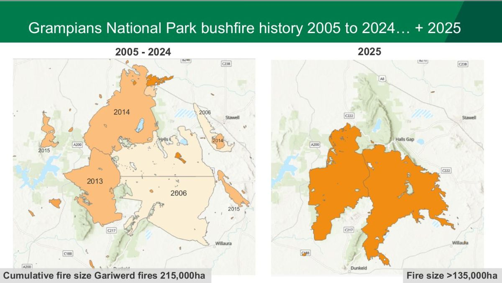
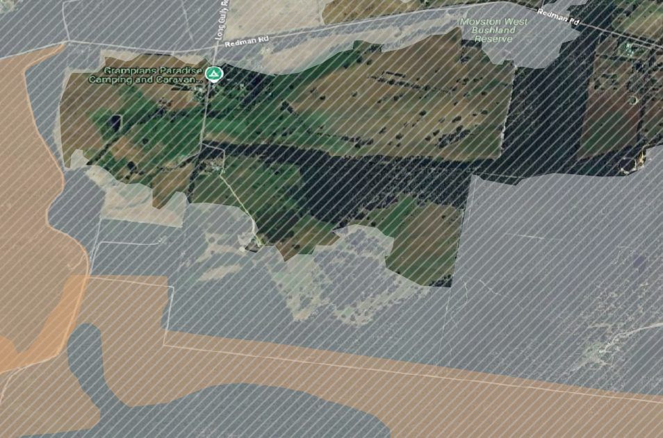

Your property’s fire history
You know when your place last burnt. The useful question is when it burnt before that. Section 1.4 turns on the interval between fires, not on any single fire.
In the Wimmera Bushfire Ecology Lookup Tool, section 1.3, Your property’s fire history, lists every fire season on the state record for your block since 1939: the fire’s name, whether it was a bushfire or a planned burn, how much of your block it burnt, and how severe it was. Hover over a fire to see its whole mapped extent in red, with the part on your block in yellow. Click a fire to zoom out to all of it; click it again to come back to your block.
Portal section 1.3 for the example block: the summary sentence and the fire table (1939, 2006, 2024), with the severity column.
Capture from the lookup tool on the example block near Pomonal (the block it opens on). Crop to section 1.3.
The map while hovering over the 2024 fire in section 1.3: the whole mapped fire in red, the part on the example block in yellow, the block outline in white.
Capture from the lookup tool on the example block near Pomonal (the block it opens on). Click the 2024 row so the map zooms out to the whole fire, then capture the map.
The state record shows three fire seasons on the example block: 1939 and 2006, and the December 2024 Pomonal fire. The gaps between them are 67 years and 18 years. Section 1.4 turns those gaps into a verdict.
Hovering over the 2024 fire puts the block in context: the block is a small piece of a much larger burnt area, which is what makes any part of it that escaped so valuable (section 1.5). And the fire map shows a boundary, not what burnt inside it. Ground inside a fire outline is rarely burnt evenly.
Reading the table
- Season and fire — the fire season and the fire’s name, tagged as a bushfire or a planned burn.
- Area of your block burnt — how much of the block falls inside that fire’s mapped boundary.
- How severe was it here? — filled in from the state’s severity mapping where it exists (the line underneath says what the record shows). If you saw the fire, or the ground straight after it, set it yourself: high means crowns burnt with few unburnt patches, patchy means the canopy was mostly intact. Section 1.4 uses this.
- Add fires the record missed — a fire you, a previous owner or a neighbour remembers. Added fires count across the whole block in section 1.4.


What the record doesn’t tell you
- It maps what was mapped. Coverage is best for large fires on public land. Small and older fires on freehold are recorded patchily. A blank is not evidence that nothing burnt.
- Perimeters, not severity. Ground shown inside a fire boundary almost always contains patches that didn’t burn — and those matter (section 1.4). The severity layer itself is modelled from aerial and satellite imagery, not walked on the ground, so it carries real error.12
- It stops at 1939. Your own memory, the previous owner’s and the neighbours’ is real evidence. Historical aerial photography from the 1940s and 50s can settle arguments.
Two fires inside the minimum interval isn’t a disaster, but it tells you to watch the shrub layer (section 2.2).
Cumulative fire in Gariwerd has been severe — around 215,000 hectares of overlapping fire in two decades. The private blocks around it had generally carried at most two fires in twenty years. If you are on private land near a heavily burnt park, the park’s fire history is probably not yours.3
Where this comes from. DEECA’s fire history records, published on DataVic as Fire History Records of Fires across Victoria and Fire History showing the number of times areas have been burnt.1 Forest Fire Management Victoria also publishes maps of the major bushfires since 1939. If you’d rather not use the lookup tool, your Landcare facilitator, CMA or council can map your block’s fire history in a few minutes.
Check that the lookup tool loads the state data once the guide is live on GitHub Pages. Confirm the 1939 and 2006 fire extents for the example block against the lookup tool screenshot rather than the workshop slide.